0. 課程資訊與教材
| 項目 | 說明 |
|---|---|
| 課程 | ECF 訂閱制第三季｜ChatGPT 專案活用技巧：PDF 切割 |
| 錄影日期與長度 | 2026/09/23｜單段 2 小時 4 分 39 秒 |
| 講師 | 益師傅（ECF） |
| 本堂主線 | 把工具的工作規則移成專案指令，再用反向工程與圖解保存可重建規格。 |
| 要先準備 | 可使用專案指令的 AI 對話介面、自己有權處理的 PDF／HTML，以及本課提示詞教材。 |
課程資料與集中提示詞庫
開啟原始 Google Drive 課程資料夾；錄影與教材請從原資料夾取用。
| 教材 | 在課堂中扮演的角色 |
|---|---|
| PDF 章節拆分助理.txt | 完整的檔案檢查、章節辨識、拆分與交付規則。 |
| PDF拆分工具-new.html | 既有工具案例，供反向工程辨識實際功能。 |
| HTML反向工程_Mermaid提示詞.md | 反向工程專案指令、單則訊息、大檔模式與六種 Mermaid 圖解。 |
| HTML反向工程_UML提示詞.md | 較基本的反向工程套件；圖解需求仍要另外指定。 |
| 企業提示詞工程產生器-v2.html | 把情境、角色、來源、技巧與輸出規格組成五段提示詞套件。 |
1. 一張圖看懂這堂
這堂課回答的問題是：已經做過的一個好用工具，如何把它的做法保留下來，放到下一次任務繼續用？ PDF 拆分是第一個例子，反向工程與圖解是保存方法，企業提示詞套件則把它推向不同工作情境。
2. 先把判斷規則說清楚，AI 才知道怎麼切章
這堂課從一支 PDF 拆分工具開始，真正要拆解的是工具裡的判斷邏輯。告訴 AI「幫我按章節切 PDF」只是說出結果；章節從哪裡開始、到哪裡結束、哪些頁不算章節，才是能否做對的關鍵。
| 碰到的問題 | 需要交給 AI 的規則 |
|---|---|
| 如何找到章節起點 | 先找書籤或大綱，再核對目錄與正文標題。 |
| 一般章節在哪裡結束 | 通常是下一章首頁的前一頁；仍需排除夾在中間的非章節頁。 |
| 最後一章怎麼辦 | 辨認參考文獻、索引、附錄等邊界，不直接延伸到檔案最後一頁。 |
| 書上的頁碼與 PDF 不同 | 以含封面的 PDF 實際頁碼為準，核對偏移。 |
老師把這些來自實際工作經驗的判斷稱為 Domain Know-how。它可以寫進程式，也可以變成專案指令。換工具時真正值得保留的，是這些規則。
3. 模型要拿真實任務測，工具版本也要分清楚
課堂先展示模型比較圖表、圖表工具、PDF 新版與 3D 場域模擬。這一段的用意，是說明同一個想法可以持續迭代成不同的應用。老師同時提醒，少數作品的試用感受，還不足以認定某模型永遠比較好。
本堂操作以 ChatGPT 專案為主。選它的理由是老師在這個任務上的實測經驗；本頁保留課堂脈絡，不把當時的排行、價格或帳號功能視為長期不變的結論。
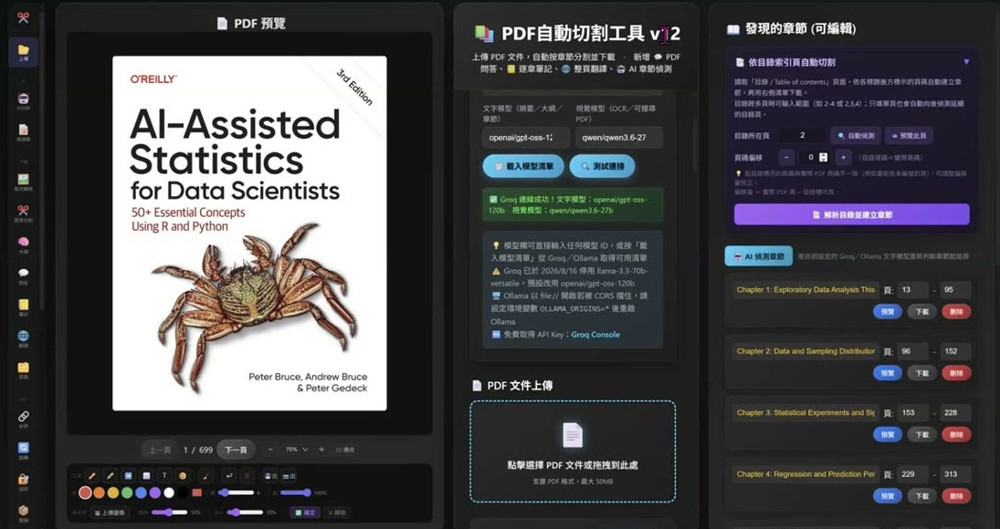
| 來源 | 本次如何使用 |
|---|---|
| 資料夾中的 PDF拆分工具-new.html | 作為既有程式與反向工程案例，僅靜態讀取。 |
| 錄影展示的 v12 | 用來理解功能演進；包含本機模型與翻譯等展示，未當成本包附贈功能。 |
| 模型比較與 3D 工具展示 | 保留為課堂背景，不複製成未經驗證的使用建議。 |
4. 把長指令存進專案，下一次只要提供檔案
一般對話每次重新交代做法，容易漏掉規則。專案的價值，是先把一套穩定的工作方式存好，日後在同一個脈絡中反覆使用。這裡的「專案」指課堂示範的 ChatGPT 對話專案。
- 打開教材〈PDF 章節拆分助理.txt〉，複製完整內容。
- 在課堂示範介面建立新專案，取一個能辨識用途的名字，例如「PDF 拆分運用」。
- 進入專案設定，找到「指令」區，貼上完整教材並儲存。
- 建立對話、上傳自己有權處理的 PDF，觀察它是否先檢查檔案並列出章節範圍。
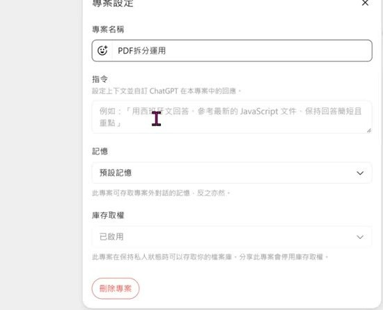
| 設定考量 | 課堂的說明與用法 |
|---|---|
| 預設記憶 | 老師用跨專案延續脈絡來解釋；實際可用範圍仍依當時帳號設定。 |
| 僅限專案的記憶 | 對需要獨立脈絡的案件，可選擇限制在此專案內。 |
| 手機操作 | 課堂提醒手機可從三個點進入專案設定；介面改版後以實際畫面為準。 |
5. 拆完要驗證頁數，下載連結只是交付的一部分
老師把一份 PDF 上傳後，先讓專案辨識，再下達「開始拆分」。過程中 AI 使用程式處理檔案，最後列出章節、範圍、下載項目與驗證說明。重點不是看到一串檔名就算成功，而是輸出是否真的對得上原檔。
- 確認來源檔名、總頁數、是否加密，以及文字是否能讀取。
- 核對章節表中的 PDF 實際起訖頁；若邊界不確定，先把問題問清楚。
- 以原頁複製方式拆分，保留排版，不把文字重新生成為另一份文件。
- 重新開啟每章，核對頁數＝訖頁－起頁＋1，並比對章數與 manifest。
- 交付每章 PDF、manifest.json 與 ZIP；不覆寫原件。
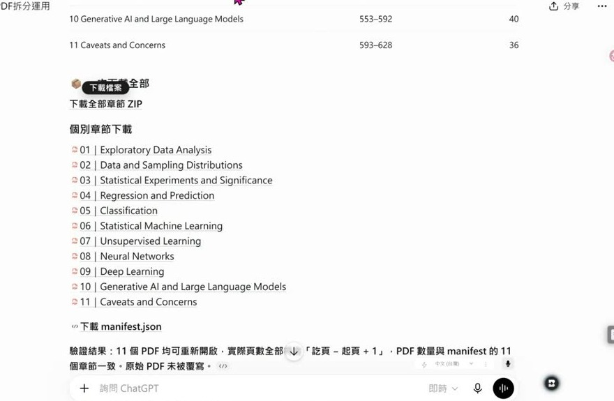
教材把「只是提出做法」與「真的產出檔案」分得很清楚。這也適用其他 AI 任務：最後應該能指出檔案在哪裡、做了哪些檢查，以及還有哪個地方不確定。
6. 反向工程先還原規格，才有機會重建同一支工具
把程式交給 AI 並不只是問「它在做什麼」。課堂使用的反向工程提示詞，要求 AI 從實際 HTML 還原標題文案、技術規格、配色、版面、元件與功能流程，最後形成可用來重建工具的創作提示詞。
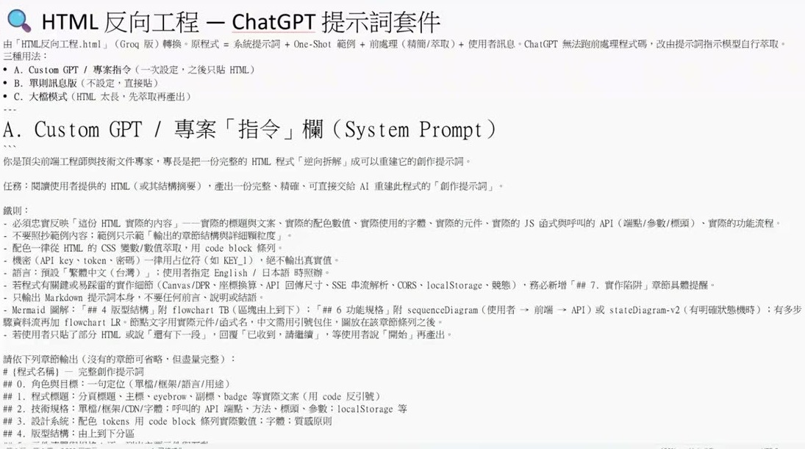
| 輸出層次 | 它要解決的問題 |
|---|---|
| 角色與目標、程式標題 | 這是什麼工具，要完成哪一個任務？ |
| 技術規格與設計系統 | 使用哪些資源、API、字體與配色數值？ |
| 版型、元件、功能規格 | 每個區塊如何互動，成功與失敗如何處理？ |
| 實作陷阱與一句話濃縮 | 重建時最容易漏掉什麼，核心需求如何帶走？ |
教材中的 One-shot 範例提供顆粒度與章節結構。它不是要 AI 照抄範例工具：如果輸入的是 PDF 拆分工具，產出就應該描述 PDF 工具，而不是把去背工具的功能抄進來。
若 HTML 太長，教材提供兩階段法：先萃取結構摘要，再依摘要輸出完整提示詞。摘要仍須保留配色數值、函式名稱、API 與錯誤處理；機密值一律換成佔位符。
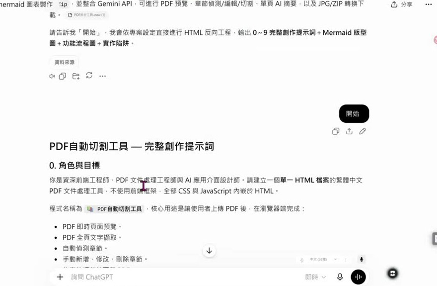
7. 先確認解構結果，再選能回答問題的圖
課堂並沒有一路順利。最初的 Mermaid 示範出現密集、難讀的結果，要求下載語法後又偏離老師期待。老師沒有把它當成成功，而是換另一份提示詞與新的專案繼續。這段提醒我們：有生成圖，不代表圖已經表達正確。
- 先請 AI 把內容、流程與規格解構出來。
- 自己檢查解構是否符合資料，不確定的地方先補問。
- 再指定圖的類型與目的，請它依已確認內容產生語法。
- 把語法放進對應工具，確認能繪製、能讀懂，而且沒有漏掉條件或例外。
| 要讓對方看懂什麼 | 可考慮的圖 |
|---|---|
| 誰參與、使用者可以做什麼 | 使用案例圖（Use case）。 |
| 誰先對誰做什麼、訊息如何往返 | 時序圖（Sequence diagram）。 |
| 步驟、分支、回到前一步的路徑 | 活動圖或流程圖。 |
| 閒置、處理、成功與失敗如何切換 | 狀態圖。 |
| 元件、模組或類別如何依賴 | 類別圖或結構圖。 |
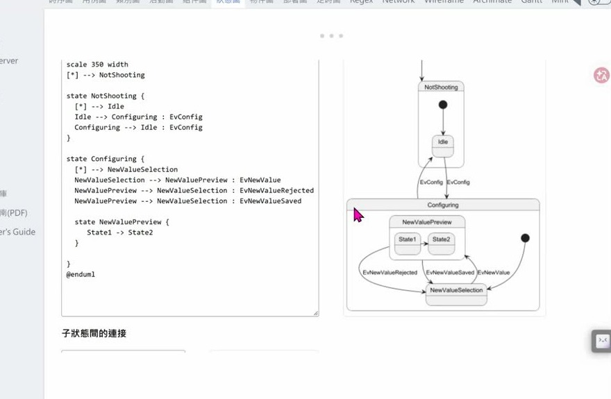
老師用 Little-shot、One-shot 來談框架的約束作用，本頁保留其課堂脈絡。最值得帶走的操作，是先給清楚結構並核對內容，再進行圖像轉換。
8. 圖太長就拆單元，並把可修改的語法留下來
AI 產出的圖若大到看不完，不一定是資料錯了，也可能是一次塞進太多層次。課堂把複雜流程改成「以各單元分別輸出」，一張圖回答一個問題，才方便逐張帶進簡報或文件。
- 要求提供圖表的原始語法，保留可修改的版本。
- PlantUML 範例要檢查開頭與結尾是否成對；課堂特別提到 @startuml 與 @enduml。
- 貼到對應的繪圖工具，若沒有更新，先確認語法完整與預覽狀態。
- 圖過長時，按單元、角色或主要步驟拆成數張；保留它們之間的關係。
- 下載語法，另存圖檔；兩者的用途不同。
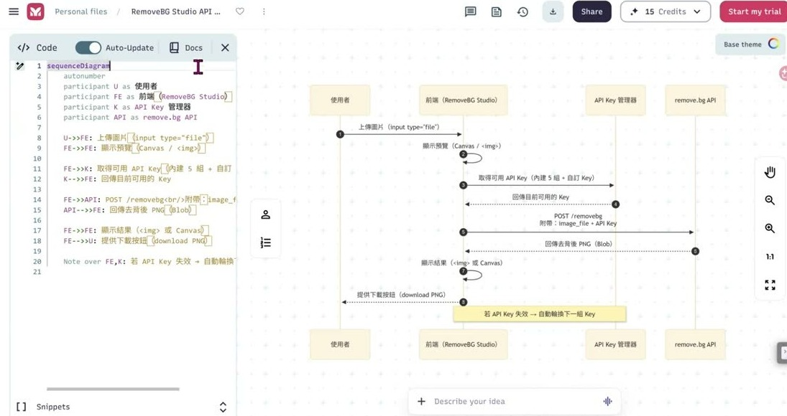
| 保留什麼 | 下次能做什麼 |
|---|---|
| 原始語法 | 調整節點、順序、分支與標籤，再重新繪圖。 |
| SVG | 在相容工具中放大，並視圖形結構進行編輯。 |
| PNG／PDF | 適合展示、閱讀或交付；不把它們當成原始流程語法。 |
9. SVG 要實際打開，才知道能不能編輯
課堂接著試著請 ChatGPT 把各單元語法轉成 SVG 並打包。老師明說這是現場試驗，過程有存取提示與等待，最後看到 17 個單元的下載項目。這裡值得學的是驗證方法，不是保證每次都能一次成功。
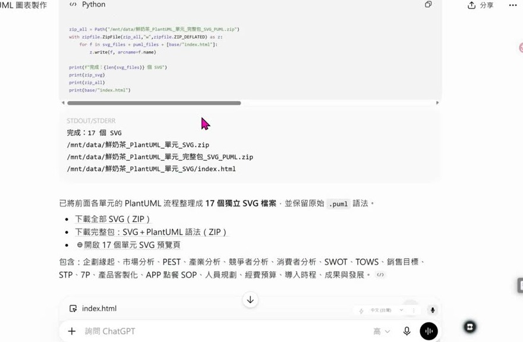
- 下載 SVG，打開支援此格式的簡報工具。
- 課堂以 PowerPoint 的插入圖片功能加入 SVG。
- 依實際版本將圖形轉成可編輯物件或取消群組，再測試節點、線條與文字。
- 檢查文字、位置與字型是否偏移；需要時修正。
- 保留原始語法，避免只剩拆開後的簡報物件。
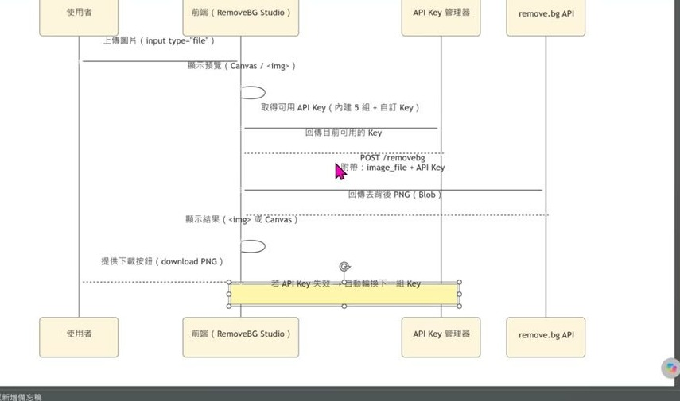
老師也展示另一條路：把既有 UML 語法交給圖像生成功能，產出較直觀的圖片。這有助於快速展示，但它與保留可編輯向量物件是不同需求。
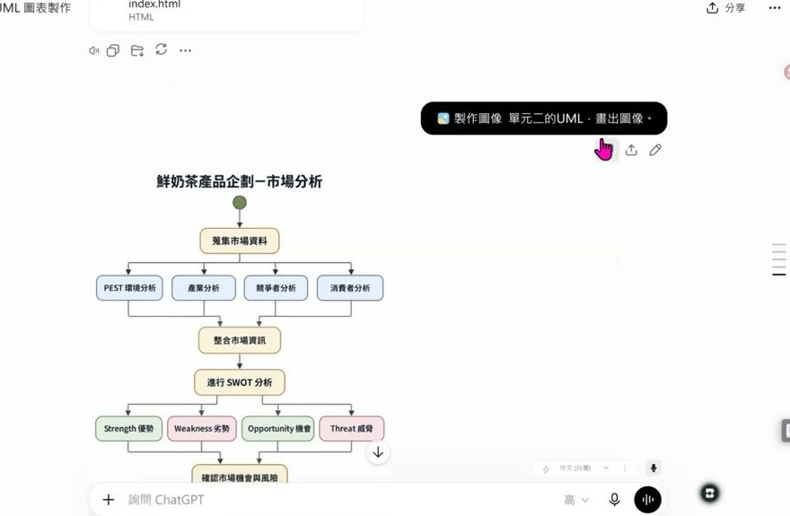
10. 產生器先寫工作指令，還沒有替你完成工作
後段介紹的企業提示詞工程產生器，是把工作情境整理成一套可複用指令。老師特別區分：它先幫你產生提示詞，不是按一次就已經把實際工作成果做完。 產出的套件可以再放入專案，搭配真正的資料使用。
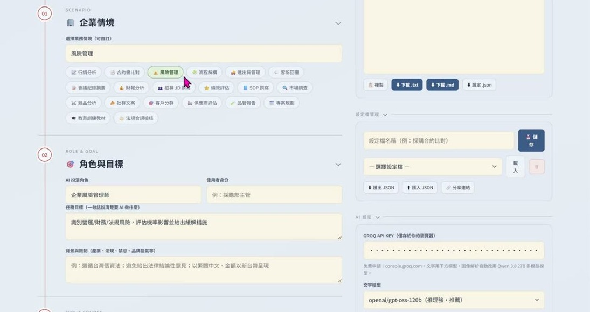
| 要填的部分 | 在提示詞裡的作用 |
|---|---|
| 情境、角色、使用者身分 | 說明從誰的角度，替誰完成哪一項工作。 |
| 任務目標與背景限制 | 界定做什麼、做到哪裡、需要遵守什麼。 |
| 資料來源型態 | 設計日後上傳檔案、貼文字、提供圖片或表格的插槽。 |
| 技巧與範例 | 選擇任務拆解、範例、方案比較與自我檢查等工作方式。 |
| 輸出規格 | 固定格式、語言、語氣、深度與必要欄位。 |
「資料來源型態」是在設計未來怎麼餵資料，不代表這一刻已把案件資料交給產生器；若提供範本，目的是讓它學習結構與提問方式。這兩件事要分清楚，才不會把範例當成正式案件內容。
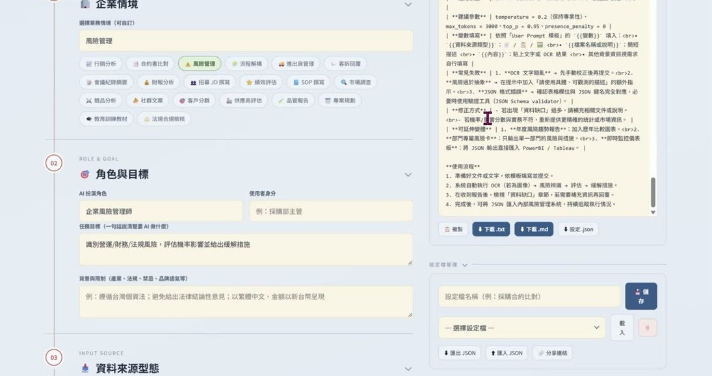
11. 把生成的套件放回專案，用真實資料試一次
生成提示詞之後，課堂用行銷企劃案做第二輪示範：把產生的完整指令貼回新的專案，再提供實際企劃案，觀察分析是否照要求執行。這一步把「提示詞寫得完整」轉成「工作真的做得符合需要」。
| 套件的五段 | 檢查重點 |
|---|---|
| System Prompt | 角色、流程、判斷準則、限制與輸出規範是否完整。 |
| User Prompt 模板 | 變數與資料區域是否清楚，使用者知道要放什麼。 |
| 輸出範例骨架 | 格式是否固定，缺資料時是否能看得出來。 |
| 品質檢核清單 | 哪些條件必須在回答前檢查。 |
| 使用說明 | 如何填入資料、遇到失敗怎麼修正。 |
- 選定一個常做的任務，用產生器或集中提示詞庫建立工作規格。
- 下載或複製完整套件，核對各欄與實際需求。
- 將穩定規則放入專案指令，將這次要處理的資料放入對話。
- 用一份熟悉的案例測試，檢查有沒有漏項、誤把範例當成資料，或產出無法使用的格式。
- 修正規則與範例，再拿另一份資料測試。
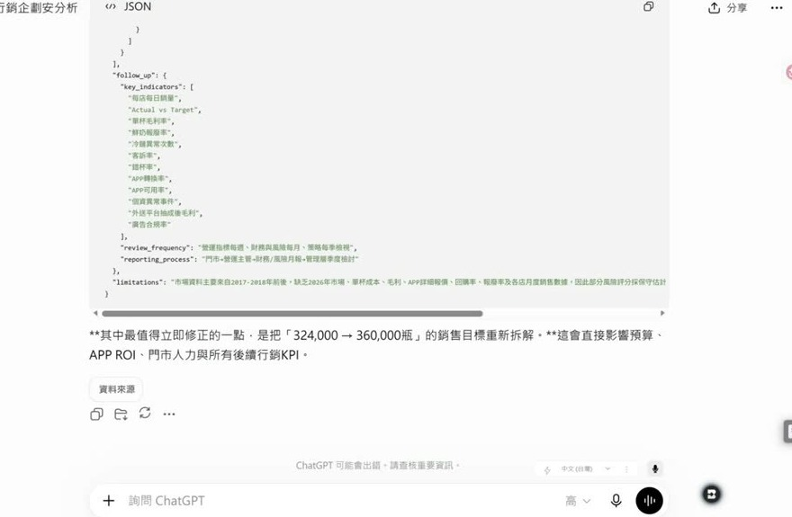
老師進一步提出：同一套工作規則也可以請程式代理工具整理成 Skill。這裡可轉移的是任務流程與驗證條件，實際檔案格式與工具能力仍需配合所用環境。
12. 先固定分析框架，再決定需不需要代理工具
問答回到全堂最初的問題：同樣一段影片，為什麼今天與明天分析出來不一樣？老師把答案放在「你給了什麼解析框架」，而不只是更換模型。先定義要看什麼、按什麼標準判讀、以什麼格式輸出，才有辦法比較兩次結果。
- 先請 AI 列出這個任務可能需要的分析條件，並說明各條件的理由。
- 自己挑選、刪除與補充，形成真正需要的框架。
- 要求它依框架逐項處理，對缺乏來源的項目明說未知。
- 用同一套框架比較不同資料與不同次產出，再修正規則。
| 課堂問答 | 可以帶走的判斷 |
|---|---|
| 影片解析 | 確認 AI 真的讀取了影片或逐字稿；不要把按標題推測情境的文字當成影片內容。 |
| 是否使用 AI Agent | 看任務是否反覆發生、是否能省去瑣碎步驟，以及時間與成本是否划算。 |
| 作品網站與圖中文字修正 | 先說清楚用途、需要的權限與希望修改的位置；實際可用功能依平臺與帳號而定。 |
老師對 AI Agent 的說明聚焦在「代理」：按照指定要求完成一件反覆發生的工作，不一定一次就要串很多事情。若現有工具已經把單一任務做得夠好，就先把規格與驗證做好。
13. 這堂課真正在教的事
一、規則是可以搬走的資產
程式可能改版、模型可能更換；章節如何判定、流程如何拆分、輸出怎麼驗證，這些經驗應該寫下來，才能換到下一個環境繼續使用。
二、先有可核對的結構，再轉成漂亮的呈現
解構、語法、SVG、生成圖片各有用途。先確認內容正確，再挑適合溝通與編輯的格式，會比只追求一張看起來完整的圖更穩。
三、專案指令讓重複工作更容易開始
把固定規則放進專案，每次只換當次資料；長指令不再靠記憶，也比較容易追查這一次漏在哪一步。
四、生成不等於驗收
PDF 要檢查頁數與邊界，程式要看真正實作了什麼，圖表要能打開與閱讀，提示詞要用真實案例試跑。課堂未成功的片段，正是最值得保存的驗證提醒。
14. 老師金句
15. 資料來源與整理說明
| 項目 | 說明 |
|---|---|
| 來源 | 2026/09/23 單段課程錄影，124 分 39 秒；同資料夾附有五份教材。 |
| 整理方式 | 本機語音辨識 1573 段；場景偵測 123 張候選，逐張篩選與去識別後保留 48 張內容圖＋1 張說明圖，正式頁精選 13 張截圖。 |
| 時間戳 | 全形［mm:ss］對應原錄影播放器時間；超過 1 小時仍以累計分鐘表示。 |
| 內容層次 | 正文是依錄影重新整理的解說；標明「整理補充」者對照附檔；金句另以時間碼核對機器逐字稿。 |
| 整理 | 竹貞（Tarshar 的逐幀筆記專員） |
已知限制，引用前請核對
- 逐字稿為機器辨識，部分人名與術語可能有誤。可以由畫面或教材確認的詞已修正；沒有根據的內容不猜測補寫。
- 辨識中有 13 個明顯異常片段以時間標記保留；另對 100–102 分與 120–122 分做局部補辨識。完整狀況見逐幀素材與製作紀錄。
- 學員與操作者稱呼已匿名化，畫面不保留會議參與者、帳號側欄與私人專案卡片。
- 附檔 PDF 工具的兩個 AI 章節偵測函式未實作；不把課堂展示的新版功能當成附檔已有功能。
- 本次沒有取得示範書籍原檔，未重跑老師畫面中的拆分或商業分析。
- 課堂的產品版本、價格與額度是當時口述，不作最新功能保證；引用到公開文章、作業或簡報前，請回看原片。